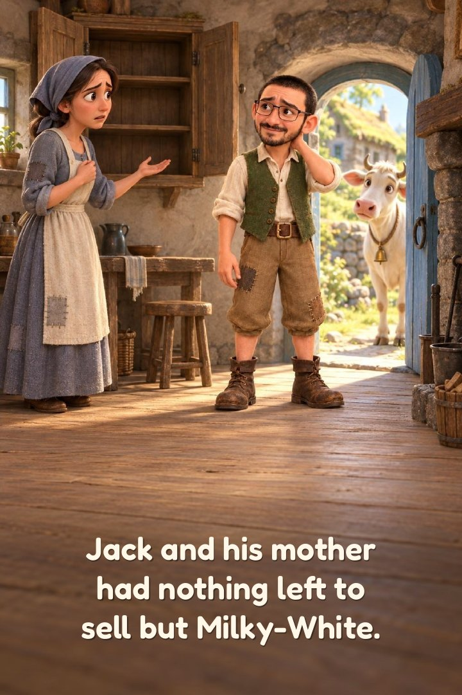
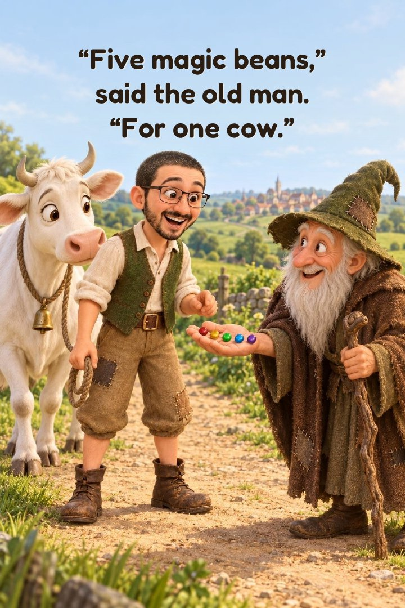
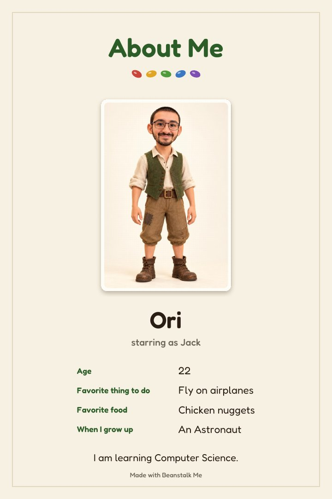

The book you're reviewing
An app turned the photo below into a short Jack and the Beanstalk picture book starring that person. Please look at the photo, then read the whole book (4 pages). Then go back to the survey tab.
1. The photo the app was given
This is the real person. The app drew him as Jack in a cartoon style.
2. The book



That's the whole book. Please return to the survey tab to answer the questions.